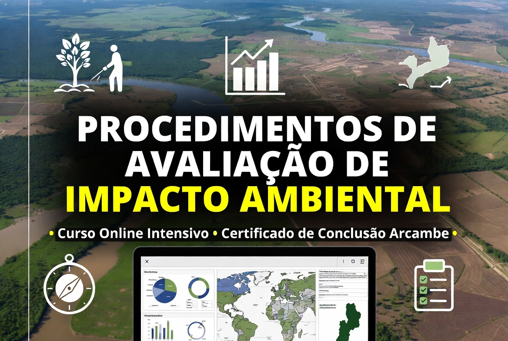

Datas
24 de Agosto a 5 de Setembro de 2026
Aprenda a produzir mapas ambientais, organizar dados geográficos e aplicar ferramentas de geoprocessamento com QGIS.

24 de Agosto a 5 de Setembro de 2026
Segunda a sexta, 17:00–20:00; sábados, 08:00–12:00
5.680 MT
Até 21 de Agosto de 2026
Técnicos ambientais, estudantes, consultores, equipas municipais e profissionais que precisam transformar dados espaciais em mapas claros.
Curso: Mapeamento Ambiental com QGIS
Edição: Nova edição 2026
Investimento: 5.680 MT
Prazo de inscrição: 21 de Agosto de 2026